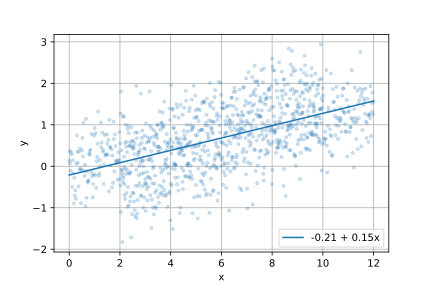
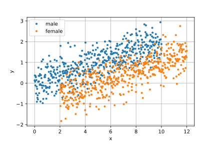

Quick Recap
Data-Based Economics
Year 2022-2023
Important points
Bias vs Variance
- A model is fitted (trained / regressed) on a given amount of data
- A model can be more or less flexible
- have more or less independent parameters (aka degrees of freedom)
- ex: \(y = a + b x\) (2) vs \(y = a + b x_1 + c x_1^2 + e x_2 + f x_3\) (5)
- More flexible models fit the training data better…
- …but tend to perform worse for predictions
- This is known as:
- The Bias (fit) vs Variance (prediction) tradeoff
- The no free lunch theorem
Overfitting
Explanation vs Prediction
- The goal of machine learning consists in making the best predictions:
- use enough data to maximize the fit…
- … but control the number of independent parameters to prevent overfitting
- ex: LASSO regression has lots of parameters, but tries to keep most of them zero
- ultimately quality of prediction is evaluated on a test set, independent from the training set
- In econometrics we can perform
- predictions: sames issues as ML
- explanatory analysis: focus on the effect of one (or a few) explanatory variables
- this does not necessary require strong predictive power
Read Regression Results
OLS Regression Results
==============================================================================
Dep. Variable: y R-squared: 0.252
Model: OLS Adj. R-squared: 0.245
Method: Least Squares F-statistic: 33.08
Date: Tue, 30 Mar 2021 Prob (F-statistic): 1.01e-07
Time: 02:34:12 Log-Likelihood: -111.39
No. Observations: 100 AIC: 226.8
Df Residuals: 98 BIC: 232.0
Df Model: 1
Covariance Type: nonrobust
==============================================================================
coef std err t P>|t| [0.025 0.975]
==============================================================================
Intercept -0.1750 0.162 -1.082 0.282 -0.496 0.146
x 0.1377 0.024 5.751 0.000 0.090 0.185
==============================================================================
Omnibus: 2.673 Durbin-Watson: 1.118
Prob(Omnibus): 0.263 Jarque-Bera (JB): 2.654
Skew: 0.352 Prob(JB): 0.265
Kurtosis: 2.626 Cond. No. 14.9
==============================================================================- Understand p-value: chances that a given statistics might have been obtained, under the H0 hypothesis
-
Check:
- global significance (Fisher test): chances would have obtained this R2 if all real coefficients were actually 0 (H0 hypothesis)
-
R2: provides an indication of predictive power. Does not prevent overfitting. -
adj. R2: predictive power corrected for excessive degrees of freedom -
coefficient:
p-valueprobability that coefficient might have been greater than observed, if it was actually 0.- if p-value is smaller than 5%: the coefficient is significant at a 5% level
- confidence intervals (5%): if the true coefficient was out of this interval, observed value would be very implausible
- higher confidence levels -> bigger intervals
Read A Regression Table

Can there be too many variables?
- Overfitting
- bad predictions
- Colinearity
- can bias a coefficient of interest
- not a problem for prediction
- exact colinearity makes traditional OLS fail
To choose the right amount of variables find a combination which maximizes adjusted R2 or an information criterium
Colinearity
- \(x\) is colinear with \(y\) if \(cor(x,y)\) very close to 1
- more generally \(x\) is colinear with \(y_1, ... y_n\) if \(x\) can be deduced linearly from \(y_1...y_n\)
- there exists \(\lambda_1, ... \lambda_n\) such that \(x = \lambda_1 x_1 + ... + \lambda_n x_n\)
- example: hours of sleep / hours awake (sleep=24-awake)
- perfect colinearity is a problem: coefficients are not well defined
- \(\text{productivity} = 0.1 + 0.5 \text{sleep} + 0.5 \text{awake}\) or \(\text{productivity} = -11.9 + 1 \text{sleep} + 1 \text{awake}\) ?
- best regressions have regressors that:
- explain independent variable
- are independent from each other (as much as possible)
Ommitted Variable
What if you don’t have enough variables?
\(y = a + bx\)
- R2 can be low. It’s ok for explanatory analysis.
- as long as residuals are normally distributed
- check graphically to be sure
- (more advanced): there are statistical tests
Ommited variable
  
- Suppose we want to know the effect of \(x\) on \(y\).
-
We run the regression \(y = a + b x\)
- we find \(y = 0.21 + \color{red}{0.15} x\)
- We then realize we have access to a categorical variable \(gender \in {male, female}\)
-
We then add the \(\delta\) dummy variable to the regression: \(y = a + bx + c \delta\)
- we find $ y = -0.04 + x - 0.98 $
-
Note that adding the indicator
- improved the fit (\(R^2\) is 0.623 instead of 0.306)
- corrected for the ommited variable bias (true value of b is actually 0.2)
- provided an estimate for the effect of variable gender
Unobserved Heterogeneity
| Individual | Gender | Shirt color | Education | … |
|---|---|---|---|---|
| 1 | M | ? | ? | ? |
| 2 | F | ? | ? | ? |
| 3 | M | ? | ? | ? |
| … | … | … | … | … |
- Suppose we want to know the effect of \(x\) on \(y\).
-
We run the regression \(y = a + b x\)
- we find \(y = 1.09 + \color{red}{0.24} x\)
-
But now, the data has a special panel structure.
- we have a categorical variable corresponding to each individual
- it is linked to several ommited variables, most of which we don’t observe
- Fixed Effects: use an indicator for each individual
- we need to drop the individual specific dummies that we observe (i.e. gender)
-
Run the regression $y_{i,n} = a_i + b x_{i,n} $
- we find $ y_{i,n} = a_i + x_{i,n} $
-
Note that adding the indicator
- improved the fit (\(R^2\) is 0.631 instead of 0.278)
- corrected for the unobserved heterogeneity bias (true value of b is actually 0.2)
Fixed Effects
- Essentially: the intuition behing correcting for unobserved heterogeneity is the same as the one behind ommitted variable bias.
- Fixed Effects are essentially dummies specific to some categories of observations
- In panel data, there are two categories: individual index and time
- individual ( Entity Effects)
- time (Time Effects)
- We index regressions by them: \[y_{it} = \color{red}{a_i} + \color{blue}{a_t} + b x_{i t} + ... \]
- Fixed effects are not very useful for prediction:
- one can predict \(y_{it}\) only for \(i,t\) already in the database
- impossible to predict new individuals/new dates
- Remedy: random fixed effects
Endogeneity
- Consider the regression model \(y = a + b x + \epsilon\)
- When \(\epsilon\) is correlated with \(x\) we have an endogeneity problem.
- we can check in the regression results whether the residuals ares correlated with \(y\) or \(x\)
- Endogeneity can have several sources: ommited variable, measurement error, simultaneity
- it creates a bias in the estimate of \(a\) and \(b\)
- We say we control for endogeneity by adding some variables
- A special case of endogeneity is a confounding factor a variable \(z\) which causes at the same time \(x\) and \(y\)
Instrument
\[y = a + b x + \epsilon\]
- Recall: endogeneity issue when \(\epsilon\) is correlated with \(x\)
- Instrument: a way to keep only the variability of \(x\) that is independent from \(\epsilon\)
- it needs to be correlated with \(x\)
- not with all components of \(\epsilon\)
- An instrument can be used to solve endogeneity issues
- It can also establish the causality from \(x\) to \(y\):
- since it is independent from \(\epsilon\), all its effect on \(y\) goes through \(x\)